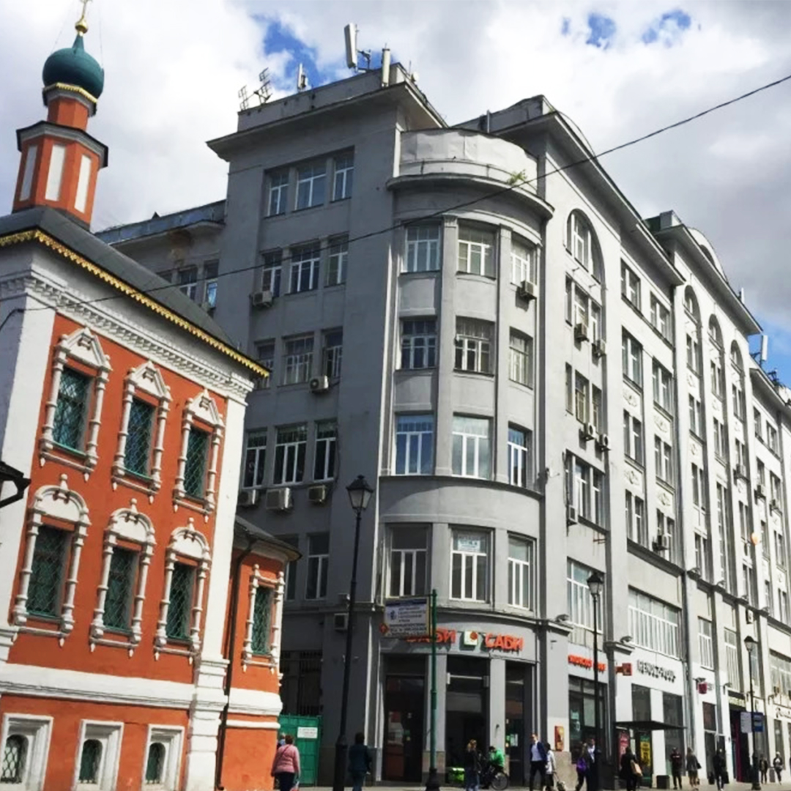

Москва | Маросейка, 7/8
Арт-пространство Фотофактура – идеальное место для любых творческих событий в историческом центре Москвы, в здании 1913 года, на улице Маросейка.
Уникальное и одновременно универсальное пространство для проведения концертов инструментальной музыки и множества других event событий. Интерьеры общей площадью 550 квадратных метров состоит из пяти атмосферных залов с разными интерьерами.
Фотофактура – это творческий эпицентр столицы с душой, расположенный в месте с более чем вековой историей.
Уникальное преимущество арт-пространства FOTOFAKTURA – это естественное освещение. Мягкий отражённый свет, нежные солнечные лучи на рассвете, яркая световая заливка всего зала или тёплое вечернее освещение. К тому же, залы обладают невероятной акустикой.
www.fotofaktura.ru